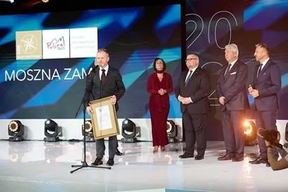
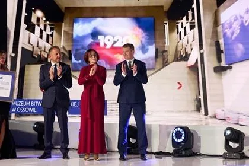
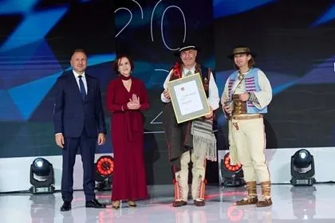

Zamek w Mosznej ze Złotym Certyfikatem, dziesięć atrakcji z Certyfikatami Polskiej Organizacji Turystycznej, Turystyczne Odkrycie Roku i Certyfikat Internautów. Podczas uroczystej gali rozstrzygnięto XXIII edycję Konkursu na Najlepszy Produkt Turystyczny, nazywanego „turystycznymi Oscarami".
Czytaj relację

